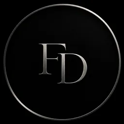

felix.
@flixi_d
Informatikstudent in Österreich · Cybersecurity & CTF · Softwareentwicklung · Java, C#, C++ und JavaScript.

@flixi_d
Informatikstudent in Österreich · Cybersecurity & CTF · Softwareentwicklung · Java, C#, C++ und JavaScript.